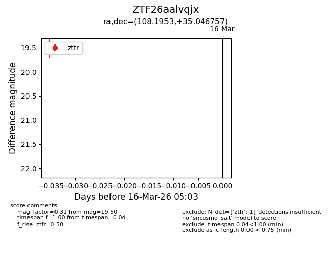
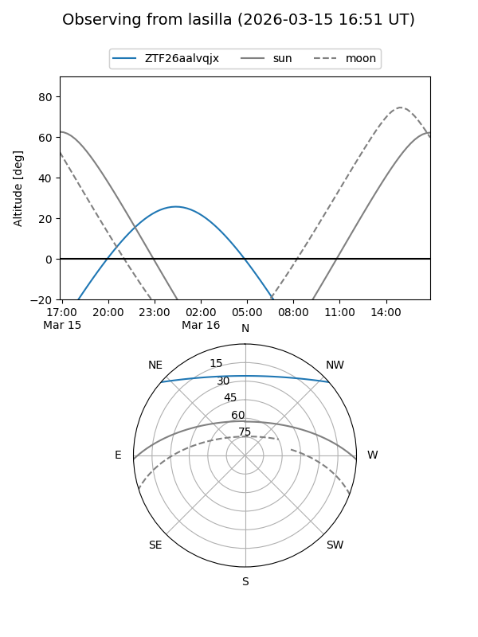
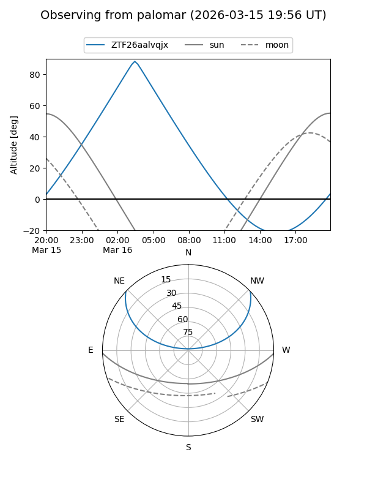

ZTF26aalvqjx
Target ZTF26aalvqjx at 2026-03-16 05:05
Aliases and brokers:
FINK: link
Lasair: link
ALeRCE: link
alt names
ZTF26aalvqjx (ztf,fink_ztf)
Coordinates:
equatorial (ra, dec) = 108.1953,+35.04676
equatorial (HMS+DMS) = 07:12:46.88,+35:02:48.33
galactic (l, b) = (182.6304,+19.24469)
Flags:
Photometry:
last ztfr=19.50
1 ztfr detections
Lightcurve

Visibility


Additional plots